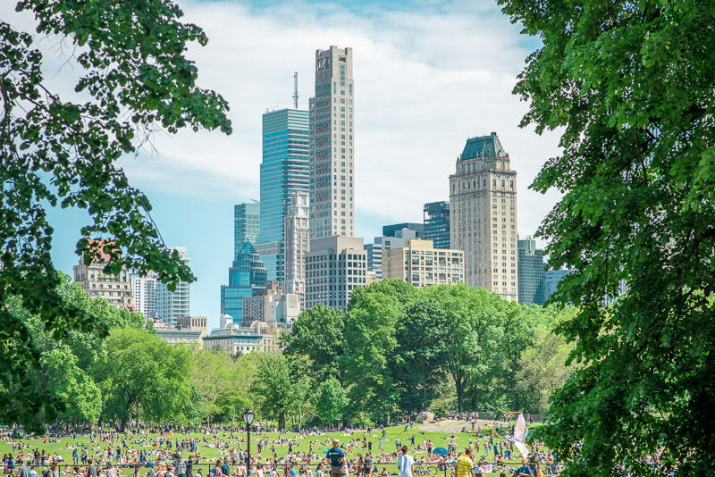
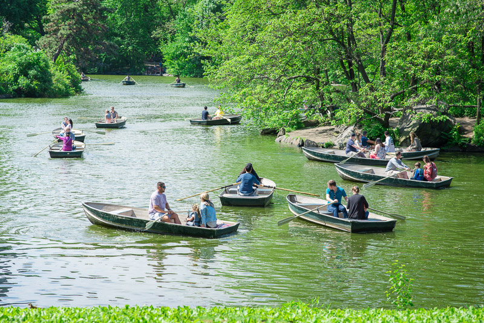
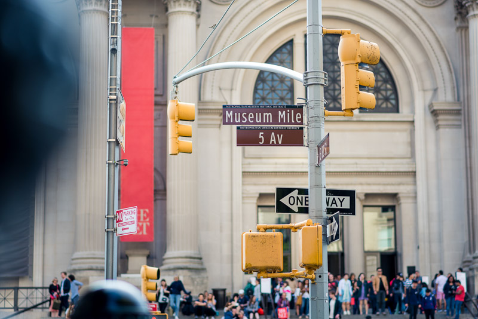
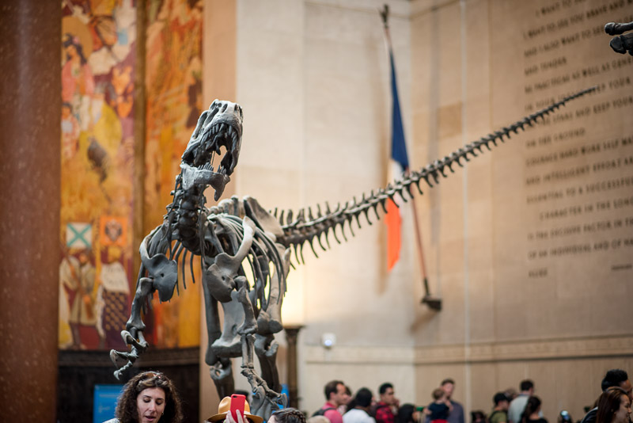
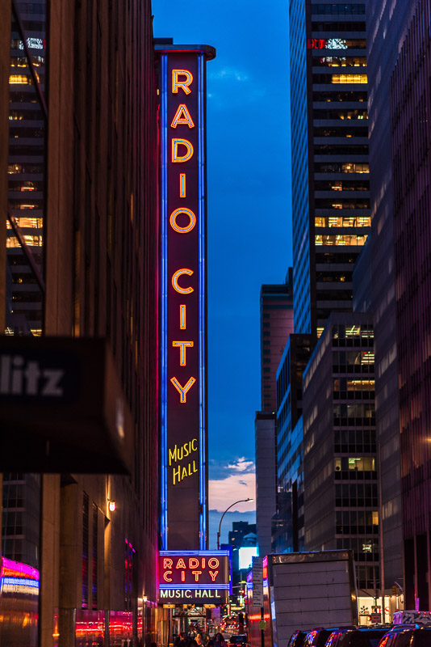
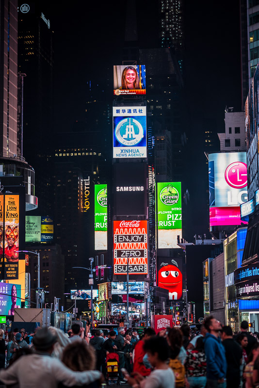
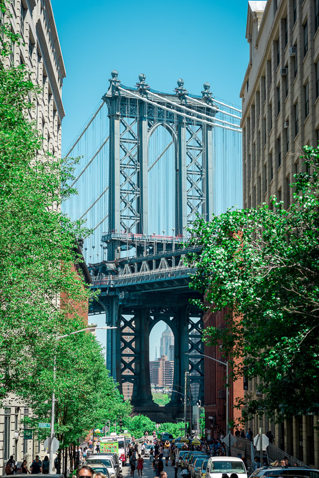
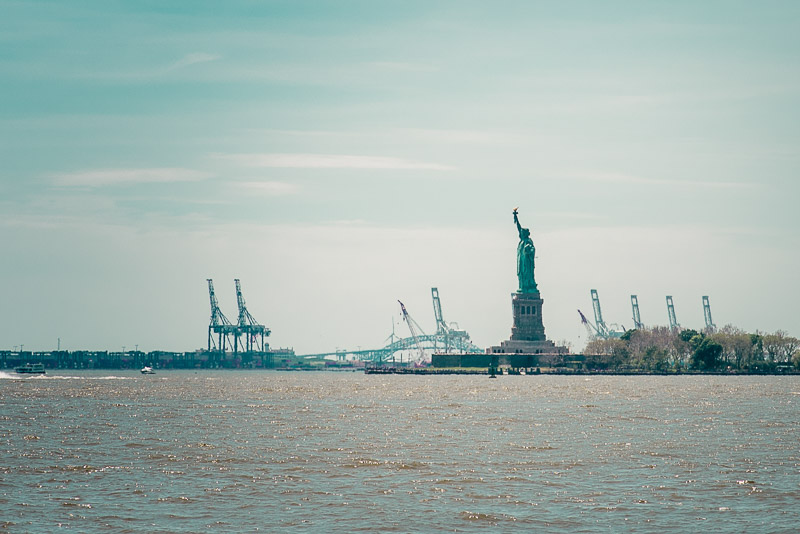

New York, USA

Central park locates in Manhattan, New York City, between Upper west side and Upper east side. 3.41 kilometers are covered with a huge
number of tree and Pound. Central Park is the most visited urban park in the United States, with an estimated 37.5 – 38 million visitors
annually, and is the most filmed location in the world. Visitors can take Metropolitan Transportation Authority (MTA) line A and B to visit
Central park. The Metropolitan Museum of Art and American Museum of Natural History are nearby and recommended.
Google map

Central park has boat rental service for visitor who looking for boating activity. Rent a boat at the Loeb Boathouse and row your way to
the heart of the Central Park Lake. 2 options are available: Row Boats with $15/hour and Gondolas with
$45/30 minutes.
Google map


The Metropolitan Museum of Art (MET) locates on 5 Avenue, Museum Mile street, East side of Central park. the MET is the largest art museum
in the United States. Its permanent collection contains over two million works, divided among 17 curatorial departments. Visitors can
take MTA line A to 81 Street Station, then, walking east crossing Central park. For visitors from outside New York State, there will be
a mandatory admission fee: $25 for adults, $17 for seniors, and $12 for students. Admission for all
children under 12 and Members and Patrons will continue to be free.
Google map

The American Museum of Natural History, located on the Upper West Side of Manhattan, is one of the largest natural history museums in the
world. Visitors can also take MTA line A to 81 Street Station, the station locates in front of the museum. The museum collections contain
over 34 million specimens of plants, animals, fossils, minerals, rocks, meteorites, human remains, and human cultural artifacts. For general
admission fee: $23 for adults, $18 for seniors, and $18 for students with ID.
Google map

Radio City Music Hall is an entertainment venue at 1260 Avenue of the Americas, within Rockefeller Center, in Midtown Manhattan,
New York City. Nicknamed the Showplace of the Nation, it is the headquarters for the Rockettes, the precision dance company.
Google map

Times Square is a major commercial intersection, tourist destination, entertainment center, and neighborhood in the Midtown Manhattan section
of New York City, at the junction of Broadway and Seventh Avenue. Brightly lit by numerous billboards and advertisements, it stretches from
West 42nd to West 47th Streets, and is sometimes referred to as "the Crossroads of the World", "the Center of the Universe",
"the heart of the Great White Way", and "the heart of the world". One of the world's busiest pedestrian areas, it is also
the hub of the Broadway Theater District and a major center of the world's entertainment industry.
Google map

Trendy Dumbo's cobblestone streets and converted Brooklyn warehouse buildings are the backdrop for independent boutiques,
high-end restaurants and trendy cafes. Many visitor can comes and visits this famous scenario from "Once Upon a Time in America".
Visitors can also take MTA line F to York Street Subway Station, and shortly walked to the spot.
Google map

The Statue of Liberty is a colossal neoclassical sculpture on Liberty Island in New York Harbor in New York, in the United States.
The copper statue, a gift from the people of France to the people of the United States. Visitors can buy ticket and take the boat to
Liberty Island for close-up view.
Google map